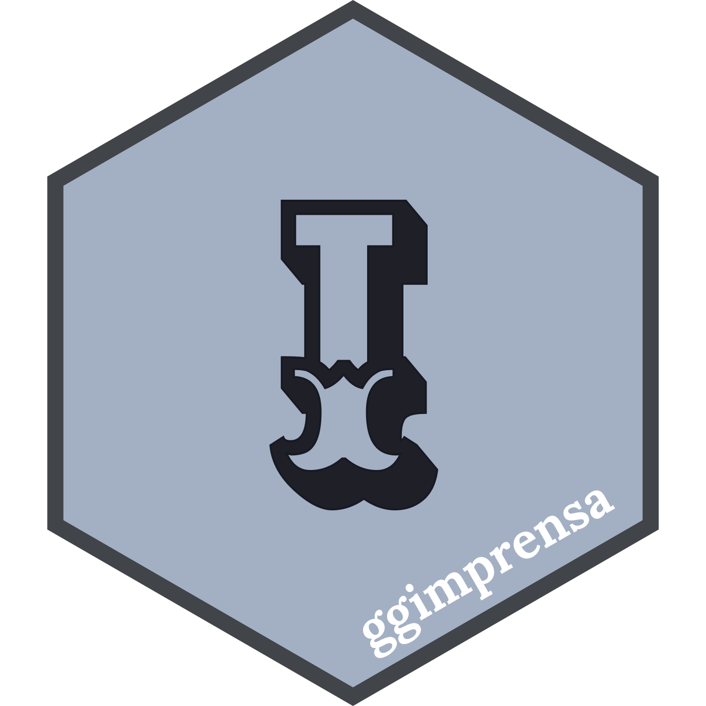

if(!requireNamespace("remotes", quietly = TRUE)){
install.packages("remotes")
}
remotes::install_github("brunomioto/reservatoriosBR")R packages
reservatoriosBR

reservatoriosBR downloads data from Brazilian reservoirs from the SAR-ANA and ONS platforms and organizes it into a structure for use in R!
I am currently looking for volunteers to test the functions and data. If you can, get in touch!
If you use it in any work, cite it or let me know!
You can install it running:
futebolplotR

The goal of futebolplotR is to provide functions and geoms that help creating visualization of Brazilian soccer related analysis. It provides a ggplot2 geom that does the heavy lifting of plotting Brazilian soccer badges in high quality, with correct aspect ratio and possible transparency.
The futebolplotR contains emblems of the teams that have participated in the Brasileirão Série A soccer league from 2003 to the present day. Other teams are also welcome!
This package can be used with data from brasileirao R package.
The code for this package was heavily based on nbaplotR with minor changes to support Brazilian soccer team badges.
You can install it running:
if(!requireNamespace("remotes", quietly = TRUE)){
install.packages("remotes")
}
remotes::install_github("brunomioto/reservatoriosBR")WorldClimData

WorldClimData presents a faster way to download WorldClim data using piggyback.
You can install it running:
if(!requireNamespace("remotes", quietly = TRUE)){
install.packages("remotes")
}
remotes::install_github("brunomioto/WorldClimData")DNAplot


The DNAplot package provides a simple and customizable function to create aesthetically pleasing plots of DNA sequences. Each base is represented by a colored rectangle, allowing for easy visualization and analysis of sequence features.
You can install it running:
if(!requireNamespace("remotes", quietly = TRUE)){
install.packages("remotes")
}
remotes::install_github("brunomioto/DNAplot")library(DNAplot)
sequence <- "ACTGAAGTA"
plot_dna(sequence)ℹ Plotting 9 bases
ggimprensa

ggimprensa brings themes from the main Brazilian newspapers for ggplot2.
This package was inspired by the ggthemes package.
The goal of this package is to help users to create more beautiful graphics in an easy and fast way.
You can install it running:
if(!requireNamespace("remotes", quietly = TRUE)){
install.packages("remotes")
}
remotes::install_github("brunomioto/ggimprensa")